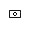
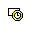
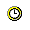

Drawing View Tracker dialog box
- Drawing view status
-
Displays the status of all drawing views in the current document. Status is displayed in a tree, with views listed under the files to which they are associative. The following symbols can appear in the Drawing View Status box and the Details box:

Drawing view

Drawing view out-of-date

Model out-of-date
Model was modified.
File not found
Model up-to-date
- Update instructions
-
Displays step-by-step instructions for updating the view selected in the Drawing View Status box.
- Update Views
-
Updates the views to match the current state of the part or assembly depicted on the drawing. All views within a document update when you select this command.
- Details
-
Displays details for the model or drawing view selected in the Drawing View Status box. When a model is selected, the current state of the model is displayed. When a view is selected, the current representation of the drawing view with respect to the current model is displayed.
How do I
Track drawing viewsUpdate part views in a document
Update a drawing view after editing a part or assembly
Open the 3D document that a drawing view references
Undo drawing view changes
Learn more
Drawing view updatesLook up more details
Drawing View Tracker commandView out-of-date
Model out-of-date
Update Views command
Update Command